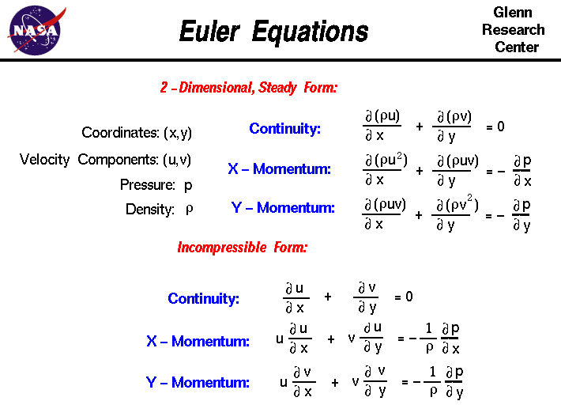

"According to Euler's rotation theorem, any rotation may be described using three angles" (Wolfram MathWorld). These three angles are called Euler's angles. They are used to describe the orientation of an object in relationship to three fixed axes (usually referred to as the x, y, and z axes). This concept is used in virtual 3D, as well as in reality.

Euler's equations for fluid dynamics are used to describe how the velocity, pressure, and density of a moving fluid are related. When Euler published these equations they were among the first partial-differentiation equations to be written down.
